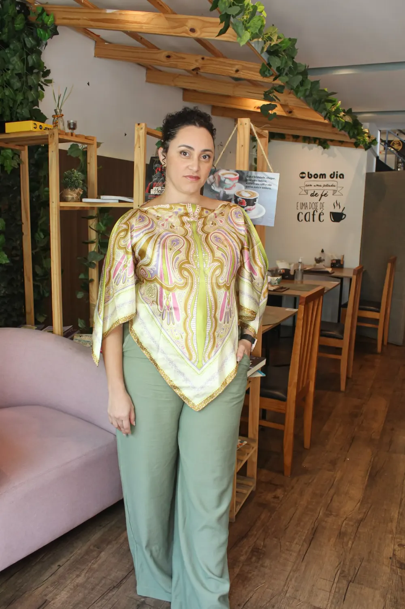
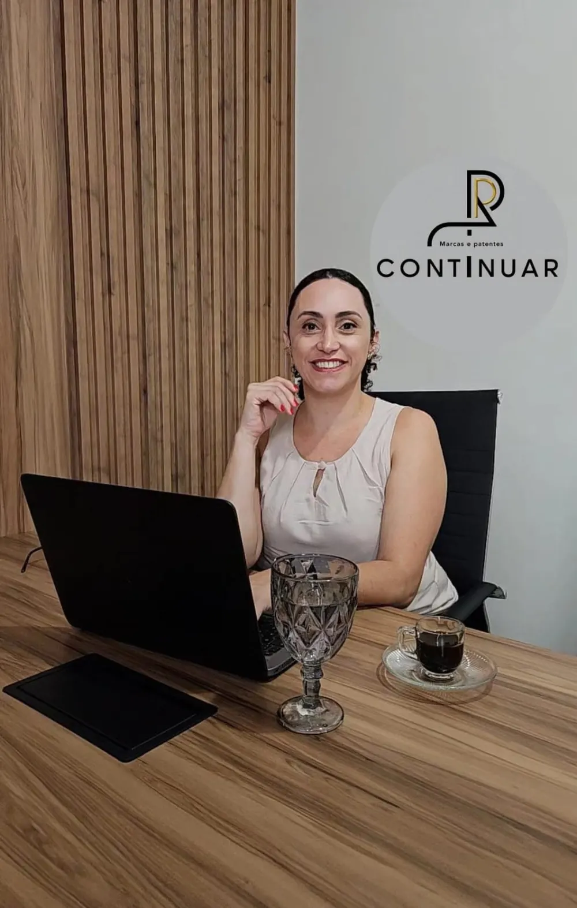
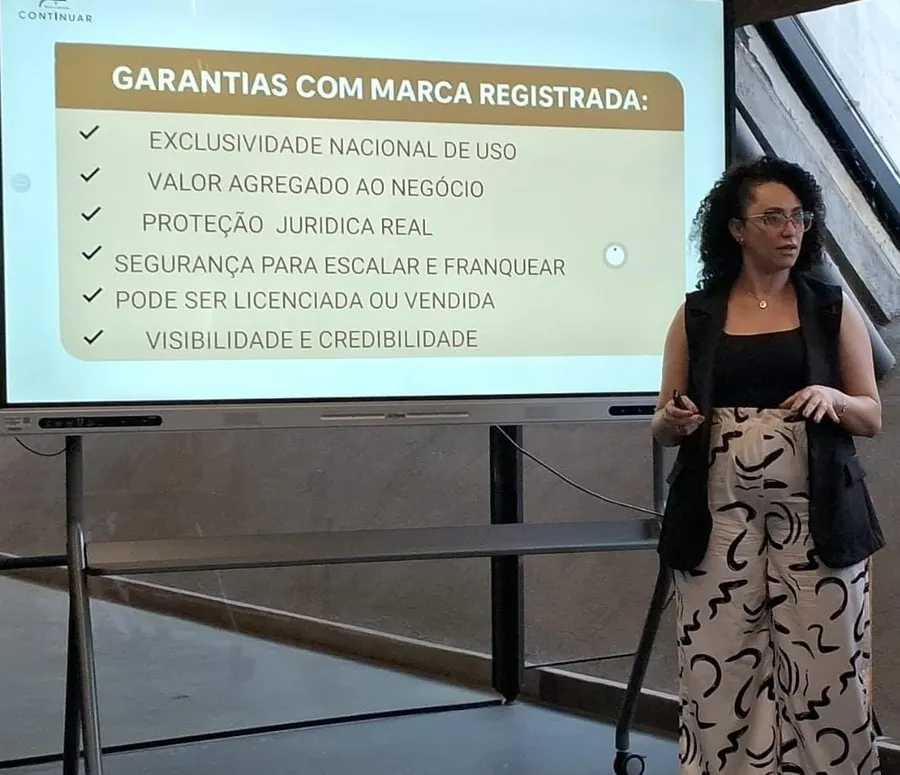
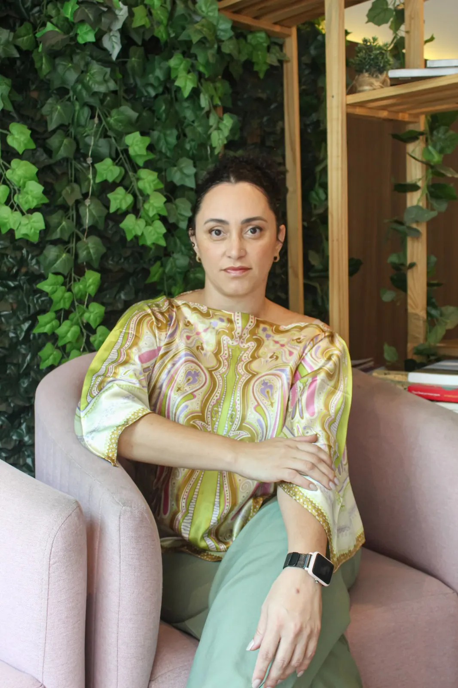

Exclusividade nacional de uso
Proteção para usar a marca no território nacional dentro da atividade registrada.

Jaqueline Sousa · Continuar Marcas e Patentes
+20 anos protegendo sonhos, histórias e a coragem de empreender.

Antes do registro, existe uma história. É por ela que a conversa começa.
Posicionamento e proteção caminham juntos.
Uma marca registrada é uma marca que pode crescer com segurança.
Proteção para usar a marca no território nacional dentro da atividade registrada.
Um instrumento para defender a identidade construída pelo seu negócio.

A marca registrada pode ser licenciada ou vendida como um ativo.
Uma estrutura mais segura para crescer, escalar ou franquear.
anos de validade do registro de marca, com possibilidade de renovação.
